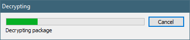

Click on the Asset Store link at the center of the screen, so that we can grab a sample Texture Package
In the Search Window, type in prototype
Scroll down until you see "Prototype Materials pack"
Click on it to load the Store Page for it
Click on Download for it to be added to your local Asset Area.
It will download the asset

Inside each Asset download, you can import some, or all of the available assets.
In this example, leave everything checked, and click on Import.
In the bottom window, under Assets, you'll see a new folder structure with the Prototype materials
Created with the Personal Edition of HelpNDoc: Create HTML Help, DOC, PDF and print manuals from 1 single source